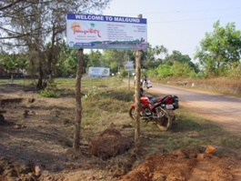
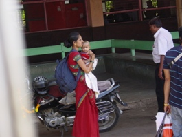
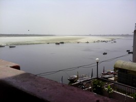

3.29 （四） 吉隆坡 |
机场外餐厅 |
 |
机场附近餐厅吃早饭 |
两份汤，一份米饭 |
| 吉隆坡国家科技馆 |
一杯汽水，一份饼，一份面 |
国家清真寺 |
Jlan Melayu |
日期 |
早餐 |
上午 |
午餐 |
下午 |
晚餐 |
晚上 |
住宿 |
3.30 （五） 到班加罗尔 |
住处自助餐 |
坐轻轨头，看城市 |
小印度饭馆，手抓饭 |
换币，到机场，16:50 - 18:20 达到班加罗尔 |
从机场大巴到住处 |
Hotel Empire International |
3.31 （六） 班加罗尔 |
早餐 |
坐公交 volvo citi bus |
喝椰子吃椰肉 |
探寻 IIMB |
公园静坐，有印度家庭送食物过来 |
Hotel Empire International |
4.3 （二） 格尔哈布尔 |
Shirish 家 |
| 到印度教寺庙，买颜料 |
午餐 |
| 两个设计师朋友来，下午睡到三点，坐车去别墅 |
| Shirish 别墅 |
二楼喝啤酒聊天，询问 |
| Shirish 别墅 |
4.4 （三） 格尔哈布尔 |
炒面包 |
| Shirish 安排人用摩托送到路边，坐公交车回，到Milind 家放行李，米林安排女职员逛街。 |
Milind 公司工作餐 |
| Milind 将要离职的女职员陪逛街 |
| Milind 准备的家庭 patient |
| Milind 约两前同事，一新同事一起吃饭。 |
Milind |
4.5 （四） 到 Ratnagiri |
Milind 家 |
| Milind 送到汽车站，坐车往 Ratnagiri |
午餐 |
| 到达 Ratnagiri |
| 沙滩边吃饭（收假钱？） |
| 睡 |
MTDC |
4.7 （六） Ratnagiri |
早餐 |
| 村中找网吧，希望确定到安哥拉的火车票，未果，送果汁给女老板。 |
MTDC饭店吃饭 |
|  |
| 饭店外长木椅睡绝，又去网吧，火车票仍没有结果 |
| 住处外饭店吃饭 |
 |
| 八点，火车票没有结果；十点，确定仍然没有火车票 |
MTDC |
4.8 （日） 到孟买 |
早餐 |
| 8:45 坐长途车去孟买 |
汽车上吃 |
 |
| 19:30 到孟买，登记住处 |
|  |
| 买苹果；定下孟买到德里的机票；取消安哥拉到德里的火车票。 |
孟买 |
4.9 （一） 孟买 |
住处喝 M 茶 |
| 9:30 坐三轮车去市内火车站；坐市内的大车去市中心；逛法院，写明信片；换300美元 |
午餐 |
| 艺术展览馆；SubWay喝茶，说到走失的处理办法；逛印度门。 |
| 坐公交回住处，途中看到远处的清真寺 |
孟买 |
4.10 （二） 到德里 |
早餐 |
| 11:30 - 13:30 孟买飞到德里 |
德里机场吃饭 |
| 机场快线 - 地铁 - 步行到住处 |
| 住处外饭馆吃饭 |
| 晚上回来买四个芒果，有团体在夜晚的街道演讲 |
Hotel Amax Inn |
4.11 （三） 德里 |
早餐 |
| 烧水，出，穿过贫民区，过杂乱的批发市场，有人力三轮车，马车，平车；买铃铛；到贾玛清真寺 |
午餐 |
| 贾玛清真寺出来，到红塔边，坐公交三站，吃饭，到国际人偶博物馆，看学校画展，沿大街走 |
 |
| 上楼顶吃饭，有几个外国人在聊天吃饭；吃春卷；烧水。 |
Hotel Amax Inn |
4.15 （日） makaibari |
土豆/炸油饼/煎鸡蛋/茶 |
| 参观茶厂 |
米饭/薯条/炒菜/烧茄子 |
 |
| 茶农家小女孩 |
| 闷面/拌汤 |
| 浏览村庄 |
茶农家 |
4.14 （六） 到 makaibari |
早餐 |
| 4:30 起，6:00 到机场，飞机延迟到 11:00 在机场椅子睡 |
飞机上吃 |
| 13:30 到 Bagdogra 机场，门卫帮忙找三轮到小镇；拼吉普到 kurseong ，找到住处，看打球。 |
| 茶农家吃饭，米饭 |
| 住处 |
茶农家 |
4.13 （五） 德里 |
楼顶吃饭 |
| 坐地铁到附近，走，经过空军学院；找到藏图书馆，进，看二楼展馆 |
到市场吃 SubWay |
| 回来，穿过一个有城堡的公园，看两本画册，走到车站处。 |
| 一个快餐市场吃饭，有意大利面 |
 |
| 坐公交/三轮回旅馆；MY上网，烧水，收拾东西 |
Hotel Amax Inn |
4.12 （四） 德里 |
早餐 |
| 儿童引领的“城市漫步” 计划午餐地 |
SubWay |
| 到新德里广场；印度门；步行到一个市场 |
| 旅馆外饭馆吃饭（生命吠陀回来） |
| 到甘地纪念馆；地铁有三个警察保护女子座位，体会：公共区域要有规则；受到破坏时要有维护机制 |
Hotel Amax Inn |
4.20 （五） 瓦拉纳西 |
早餐 |
| 坐三轮去鹿野苑 |
在 LP 推荐的一个布遮的饭馆吃饭，喝柠檬水 |
| 在佛教图书馆与两个管理员聊天，回，到 Benares Hindu Univeristy 大学 |
| 在大学外饭馆吃饭，喝蔬菜汤 |
| 坐一个老者骑的三轮，中途下车，走过一个市场到码头，从码头回住处。 |
Ganpati Guest House |
4.24 （二） 到加尔各答 |
火车站的一个蛋糕店 |
| 到印度寺庙的街边，回来后送走上海人。 |
住处对面吃 |
| 与双鱼/骆驼/印度人逛大街到维多利亚公园 |
| 住处对面 |
| 骆驼去飞机场，打的费 RS250 |
Rodhi Tree |
4.23 （一） 离开菩提伽耶 |
路边苍蝇很多 |
| 上午与杜兰/骆驼参加寺庙冥想 Root Institute for Wisdom Culture |
大觉寺斜对面的饭馆 |
| 在饭馆坐；买佛珠 |
| 中华寺面条，炒菜 |
| 在中华寺吃饭，坐三轮去雅格火车站，见上海男女 |
火车上 |
4.19 （四） 到瓦拉纳西 |
早餐 |
| 到达瓦拉纳西 |
午餐 |
|  |
| 沿恒河往 Benares Hindu Univeristy 大学方向走 |
| 恒河边饭馆吃饭，第二次喝可乐 |
| 恒河岸边夜市 |
Ganpati Guest House
|